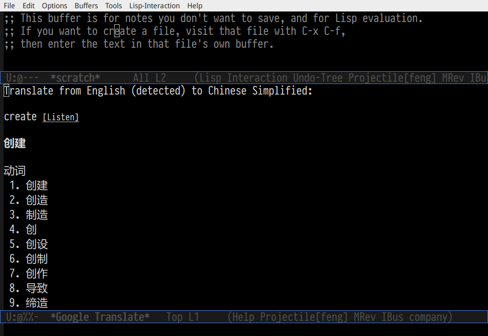
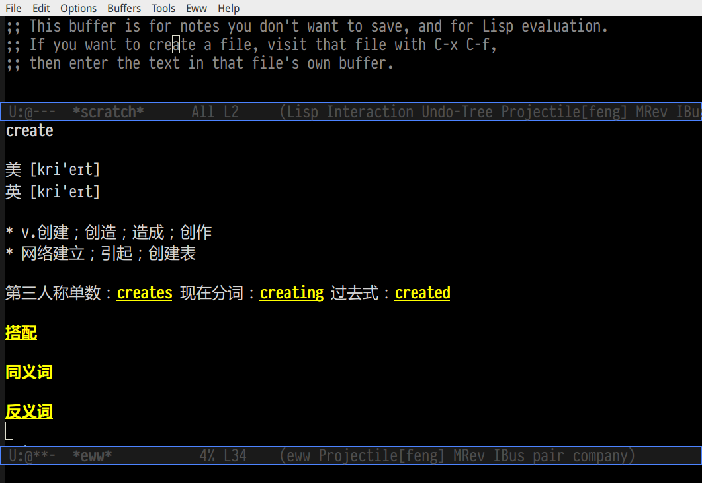
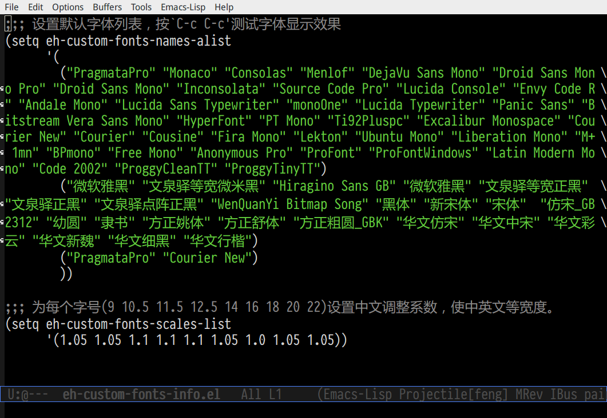
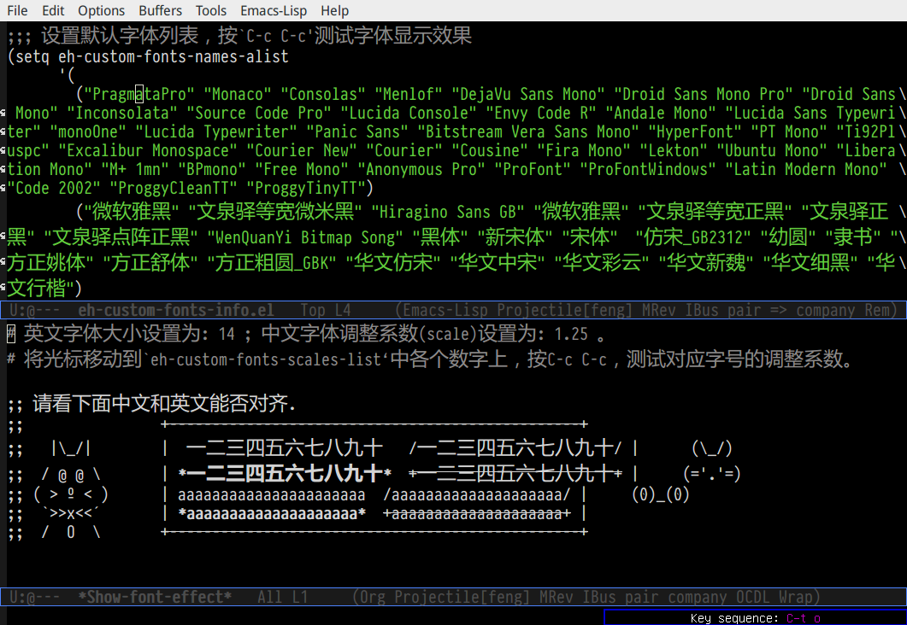
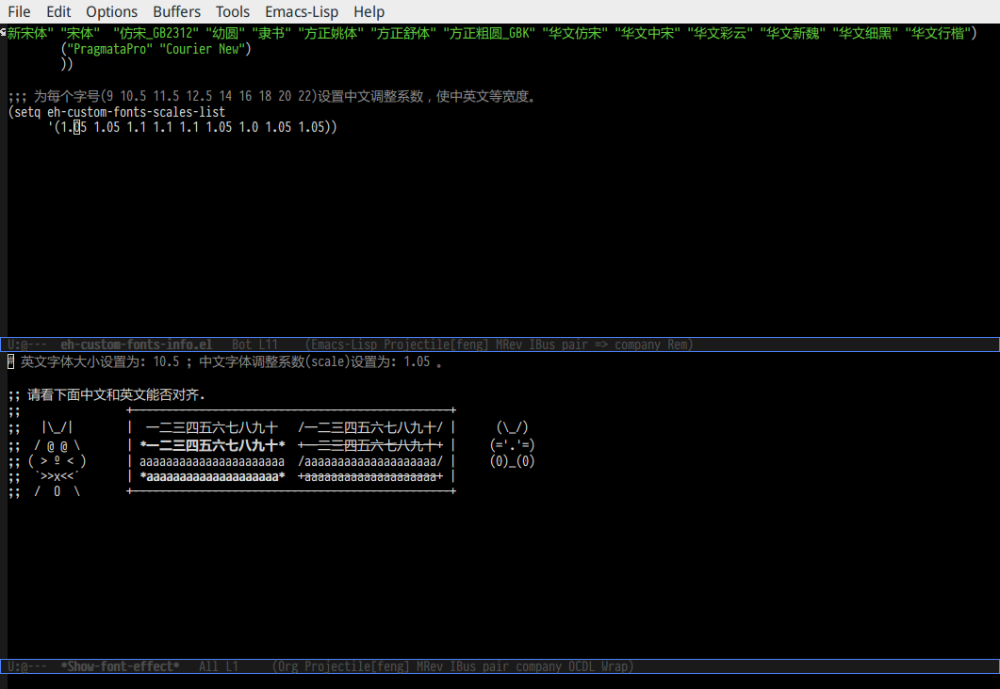
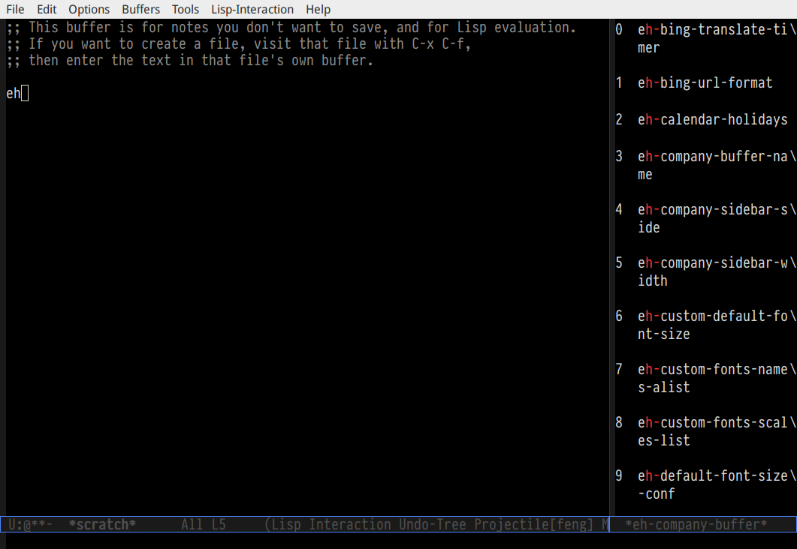
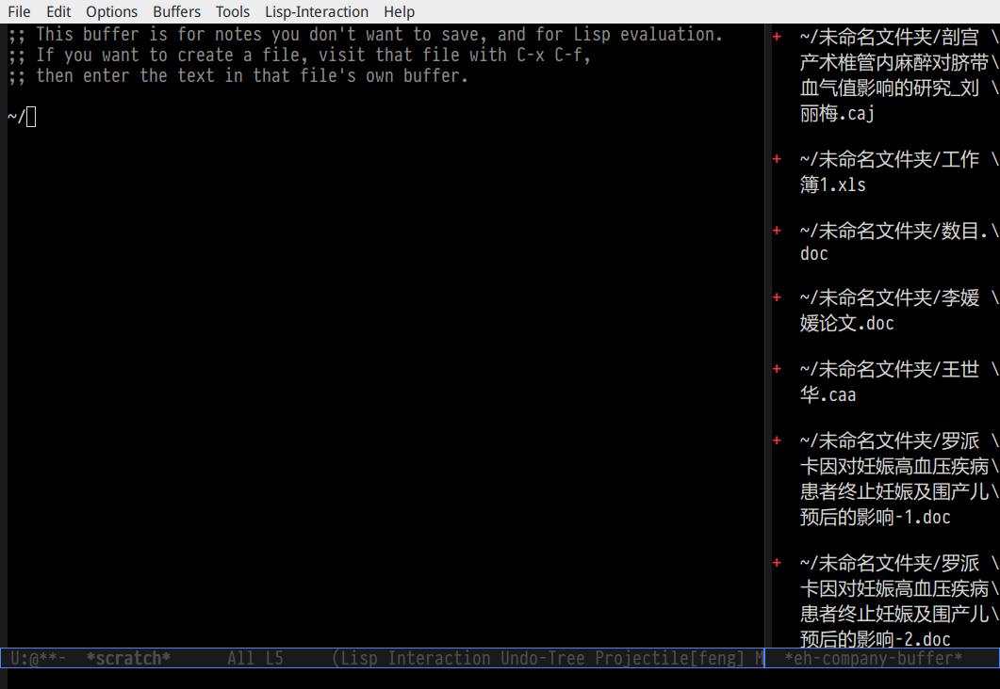

emacs-helper配图使用说明
目录
1 eh-translate.el 简要介绍
1.1 截图显摆
1.1.1 sdcv字典

1.1.2 google翻译

1.1.3 bing翻译

1.2 命令介绍
1.2.1 eh-bing-translate-at-point
- 翻译光标处的单词，不可以翻译句子。
- 使用eww调用bing网页，在线翻译。
1.2.2 eh-sdcv-translate-at-point
- 可以翻译单词，不可以翻译句子。
- 可以英译汉，也可以汉译英（需要stardict词库支持）。
- 使用org-mode显示sdcv翻译输出的结果。
1.2.3 google-translate-at-point
- 使用google在线翻译。
- 可以翻译单词和句子。
2 eh-fonts.el 简要介绍
2.1 安装
(require 'eh-fonts)
2.2 设置
(eh-fonts-setup)

eh-custom-fonts-names-alist第一个列表为英文等宽字体列表，第二个列表为中文字体列表。调整（添加字体名称，删除字体名称或者排序字体名称）后， 按C-c C-c查看字体显示效果（只能查看字体显示是否正确，不能查看字体是否对齐）。

中文和英文字体设定无误后，继续调整eh-custom-fonts-scales-list，以实现中英文对齐。将光标移动到每一个数字上，按C-c C-c，根据对齐结果调整数字大小，直到中文和英文可以完美对齐。

9个数字一一调整， 调整完成后保存文件。
2.3 使用
放大字体
eh-font-size-increase
缩小字体
eh-font-size-decrease
3 eh-complete.el 简要介绍
company默认使用overlay菜单frontend， 中文显示存在问题。我简单的写了一个sidebar frontend, 效果如下：

